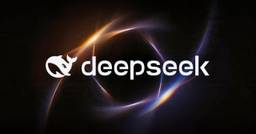

npaka
https://note.com/npaka
プログラマー。iPhone / Android / Unity / ROS / AI / AR / VR / RasPi / ロボット / ガジェット。年2冊ペースで技術書を執筆。アニソン / カラオケ / ギター / 猫 twitter : @npaka123
フィード

DeepSeek Search API・Fetch APIを試す - ローカルLLMで使えるWeb検索
npaka
「DeepSeek」の「Search API」と「Fecth API」を試したのでまとめました。続きをみる
3時間前

Muse 入門 - 常駐AIエージェントの機能・使い方・料金 3
3
npaka
Metaが公開した常駐AIエージェント「Muse」について、できること、使い方、料金、他のAIエージェントとの違いをまとめました。続きをみる
1日前
1Password for Agents - AIエージェント向けパスワード管理機能
npaka
AIエージェントがパスワードを直接扱わずにログインできる「1Password for Agents」についてまとめました。続きをみる
2日前
AnthropicがAgent SkillsをAAIFに寄贈 - MCP・AGENTS.mdとともに進むAIエージェントの標準化 2
npaka
AnthropicによるAgent SkillsのAAIFへの寄贈と、MCP・AGENTS.mdとともに進むAIエージェントの標準化についてまとめました。続きをみる
2日前

DGX Sparkの台数別おすすめローカルLLM - Mia's AI Labが選ぶベストモデル 2
npaka
Mia's AI Labが公開した、DGX Sparkの台数別おすすめローカルLLMと、その推論性能を紹介します。続きをみる
2日前
Dream-1 開発者が語るロボットAIの進化 - LLMとWAMの融合・ゼロショット転移・System 0 1
npaka
ロボット基盤モデル「Dream-1」の開発者が語る、LLMとWAMの連携、ゼロショット転移、高速制御、追加学習不要への進化をまとめました。続きをみる
2日前

Codex Security でiOS・Androidアプリの脆弱性をチェックする 2
npaka
「Codex Security」でiOS・Androidアプリの脆弱性をチェックする手順をまとめました。続きをみる
3日前


Anthropic「OSS Scanner」の概要 - Claude MythosでOSSの脆弱性を無料検出 57
npaka
Anthropicの「OSS Scanner」の概要をまとめました。続きをみる
5日前

DeepSeek-V4.1-Flash-1017 を DeepSeek Harness で試す 1
npaka
「DeepSeek-V4.1-Flash-1017」を「DeepSeek Harness」で試したのでまとめました。続きをみる
7日前

AnthropicのAI時代のコードレビュー術 - Claude Codeによる自動レビューと人間の役割 492
npaka
以下の記事が面白かったので、簡単にまとめました。・How the Claude Code team does code review続きをみる
8日前

Google Antigravity 2.0 で Gemini 4 Argon を試す
npaka
「Google Antigravity 2.0」で「Gemini 4 Argon」を試したのでまとめました。続きをみる
8日前
Google Colabの MiniMax H3 をCodexから利用する方法
npaka
Google ColabのA100で、「MiniMax H3」を動かし、手元の「Codex」から使ってみました。・セットアップ : 約14秒・動画生成 (960 × 544 10秒) : 約6分32秒続きをみる
12日前
Google AI Pro 月額2,900円 で何ができる？ Colab A100・動画・音楽生成まで
npaka
月額2,900円でさまざまな特典を利用できる「Google AI Pro」について、できることをまとめました。続きをみる
12日前
Google Colab の Strata+Qwen3.8-Flash-Next をローカルのPiで利用する方法
npaka
Google ColabのA100で、Strataを使って「Qwen3.8-Flash-Next」を動かし、ローカルの「Pi」から使ってみました。・セットアップ：約26分・猫の3Dモデル作成：約1分続きをみる
12日前
Google Colab の Qwen3.8-27B をローカルのPiで利用する方法
npaka
Google ColabのA100で「Qwen3.8-27B」を動かし、ローカルの「Pi」から使ってみました。・セットアップ：約10分・ブロック崩し作成：約22.6秒（piの計測）続きをみる
13日前
ロボットは肉体労働の74%を実行可能、しかし人間より安いのは0.3% - Anthropicの調査
npaka
Anthropicの調査結果から、現在のロボットができる仕事と、普及に向けた課題を見ていきます。続きをみる
16日前